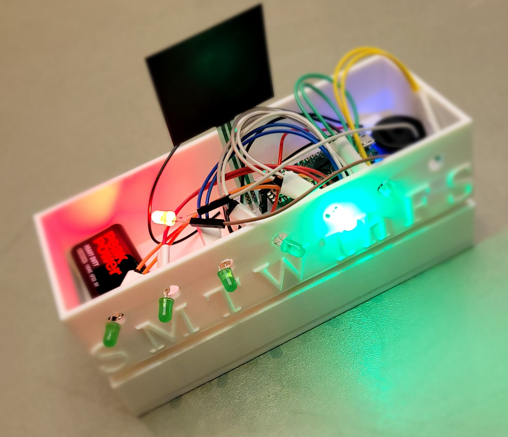

Part of a team in TURTLE robotics, designing a robot arm with 6 degrees of freedom to be used in
a
chemistry wet lab
Wrote a program for an Arudino to control a motor via pulse width modulation,
where the user inputs an angle and the motor rotates to that angle at a user-defined speed
PilLED: TAMUhack 2025 project

PilLED is a smart medication container that provides audible and visual reminders for the user
to
take their medication
Made a custom chassis in OnShape to house the electronics and pills
Wrote a program for an Arduino to control the 7 LEDs corresponding to each day of the week as
well
as
the speaker playing the alarm
Planning on updating the design with some or all of the following: support motorized dispensing
of
medication,
IoT functionality to send text reminders, or adding weight sensitivity to the containters
Magic Mirror: IEEE Hackathon 2024 project
Magic Mirror is a mirror powered with a pretrained pytorch model that detects acne and other
blemishes
on a user's face
Gives a rating for the user based on how clear their face is, and provides encouraging words or
reminders
Implemented using a raspberry pi 4, pi camera, and a display
Single Datapath Processor: CSCE 350 project
In Verilog, programmed the digital design of each of the componnents needed for a single
datapath
processor
Implemented the use of register, branch, and other instructions in this processor